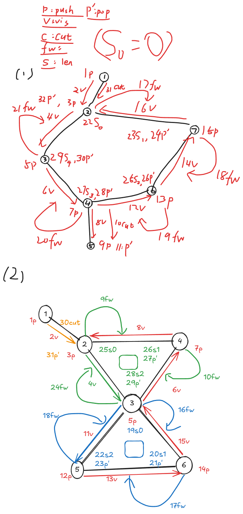
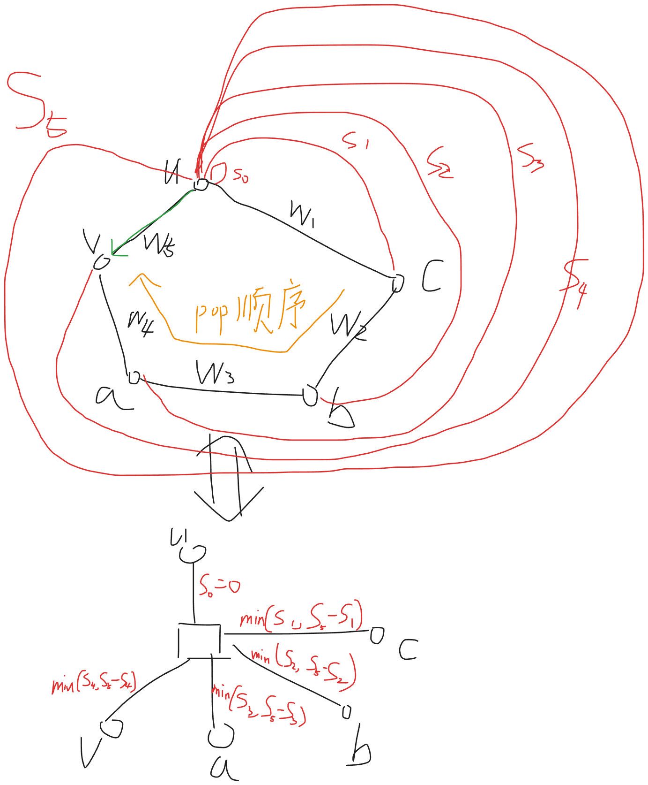

Cactus 仙人掌
图解
Link 最短路

Circle 最短路

P1 仙人掌最大权独立集（直接DP）
- 【坑点】
- 没有发现，仙人掌缩环
- 其实 就是 按照 拓扑序 的！
#include<bits/stdc++.h>
using namespace std;
using ll = long long;
namespace Cactus {
// P4410
const int N = 1e5 + 5;
const int M = 2e5 + 5;
int n;
struct Edge {
int to, nxt;
}e[M*2];
int hd[N], cntE;
int dfn[N], low[N], dfncnt;
int stk[N], tp;
// 题目信息
int a[N];
ll dp[N][2];
void init(int nn) {
fill(hd,hd+1+n,0);
fill(dfn,dfn+1+n,0);
n = nn;
cntE = 1;
dfncnt = tp = 0;
}
void add_edge(int u,int v) {
e[++cntE] = {v, hd[u]};
hd[u] = cntE;
}
void tarjan(int u,int fi);
void link(int u,int v) {
// 收集环节点 标记已有环节点
vector<int> buf;
int pop;
do {
pop = stk[tp--];
buf.push_back(pop);
}while(pop != v);
// 【坑坑点！】 我太愚蠢！耍小聪明！
// 我突然 最终发现： 仙人掌缩环是按照 "拓扑序" 缩环的
// 并非无序!!!
// 所以不应该有所谓的:
// 递归计算完毕 "子树"
// 都充分算完之后，终于可以计算了
// 注意 我们最终只服务于 u
// 因为 u 是 "祖先"
// 因此 下方环间的 dp 值并非全局 dp 值
// 而是一个 抽象物品 值 即使 不选 也可能有 权值
// 1. u 不选 那么直接对 [1,sz] 进行打家劫舍
ll res = 0;
ll pre0 = 0, pre1 = -2e18;
int sz = buf.size();
for (int i = 0; i < sz; i++) {
int u = buf[i];
ll cur0 = dp[u][0] + max(pre0, pre1);
ll cur1 = dp[u][1] + pre0;
res = max(cur0, cur1);
pre0 = cur0;
pre1 = cur1;
}
// 注意是 +=
dp[u][0] += res;
// 2. u 选 那么直接对 [2,sz-1] 进行打家劫舍
res = 0;
pre0 = 0, pre1 = -2e18;
for (int i = 1; i + 1 < sz; i++) {
int u = buf[i];
ll cur0 = dp[u][0] + max(pre0, pre1);
ll cur1 = dp[u][1] + pre0;
res = max(cur0, cur1);
pre0 = cur0;
pre1 = cur1;
}
// 注意是 +=
// 【坑点1】不选也有价值啊啊
// 【坑点4】 我居然直接存到 pre0 里面 根本无法生效啊
dp[u][1] += res + dp[buf[0]][0];
// 【坑点2】 如果是 二元环我不就炸了？
// 【坑点3】 不是 0 sz-1 而是 buf[0] buf[sz-1] 啊啊啊啊啊
if(0!=sz-1) dp[u][1] += dp[buf[sz-1]][0];
}
void tarjan(int u, int fi) {
low[u] = dfn[u] = ++dfncnt;
stk[++tp] = u;
// 初始化 dp 信息
dp[u][0] = 0;
dp[u][1] = a[u];
for (int i = hd[u]; i; i = e[i].nxt) {
if ((i^1) == fi) continue;
int v = e[i].to;
if (!dfn[v]) {
tarjan(v, i);
if (low[v] < dfn[u]) {
low[u] = min(low[u], low[v]);
} else if (low[v] > dfn[u]) {
// 割边直接转移
// 注意是 +=
dp[u][0] += max(dp[v][0], dp[v][1]);
dp[u][1] += dp[v][0];
tp--;
} else {
// 非割边递归转移
link(u, v);
}
} else {
if (dfn[v] < dfn[u]) {
low[u] = min(low[u], dfn[v]);
}
}
}
}
// 缝缝补补
// 只为 营造出一种 拓扑排序/树形DP/等价抽象化 的计算顺序
ll cal() {
tarjan(1, 0);
return max(dp[1][0], dp[1][1]);
}
}
void solve() {
int n, m;
cin >> n >> m;
Cactus::init(n);
for (int i = 1; i <= m; i++) {
int u, v;
cin >> u >> v;
if (u != v) {
Cactus::add_edge(u, v);
Cactus::add_edge(v, u);
}
}
for (int i = 1; i <= n; i++) {
cin >> Cactus::a[i]; // P4410
// Cactus::a[i] = 1; // P10779
}
cout << Cactus::cal() << "\n";
}
int main() {
ios::sync_with_stdio(0); cin.tie(0); cout.tie(0);
solve();
}P2 仙人掌静态最短路（仙人掌树 + 树剖）
#include<bits/stdc++.h>
using namespace std;
using ll = long long;
namespace Cactus {
const int N = 2e6 + 5;
const int M = 2e6 + 5;
int n;
int cntn;
struct Edge {
int to, nxt;
int w;
}e[M*2];
int hd[N], cntE;
vector<pair<int,int>> E[N*2];
int dfn[N], low[N], dfncnt;
int stk[N], tp;
// 圆方树信息
int fw[N]; // fromWeight
ll len[N]; // 前缀和
// 方点信息
ll sum[N*2];
void init(int nn) {
fill(hd,hd+1+n,0);
for (int i = 1; i <= cntn; i++) E[i].clear();
fill(dfn,dfn+1+n,0);
fill(sum,sum+1+cntn,0);
cntn = n = nn;
cntE = 1;
dfncnt = tp = 0;
}
void add_edge(int u,int v, int w=0) {
e[++cntE] = {v, hd[u], w};
hd[u] = cntE;
}
void link(int u,int v) {
// 顶
++cntn;
E[u].push_back({cntn, 0});
int pop, tmp = tp;
sum[cntn] = fw[u];
// 前缀和 同时计算 len
do {
pop = stk[tmp--];
len[pop] = sum[cntn];
sum[cntn] += fw[pop];
} while(pop != v);
do {
pop = stk[tp--];
// 添加最短路
E[cntn].push_back({pop, min(len[pop], sum[cntn] - len[pop])});
} while(pop != v);
}
void tarjan(int u, int fi) {
low[u] = dfn[u] = ++dfncnt;
stk[++tp] = u;
for (int i = hd[u]; i; i = e[i].nxt) {
if ((i^1) == fi) continue;
int v = e[i].to;
if (!dfn[v]) {
// 走树边
tarjan(v, i);
// 树边最终覆盖(最高优先级)
fw[v] = e[i].w;
if (low[v] < dfn[u]) {
// 没有扎口袋
low[u] = min(low[u], low[v]);
} else if (low[v] > dfn[u]) {
// 是 "割边"
E[u].push_back({v, e[i].w});
// 弹出 v
tp--;
} else {
// 是环顶
link(u, v);
// 弹出了 v
}
} else {
if (dfn[v] < dfn[u]) {
// 发现回边
// 回边覆盖(最低优先级, 先解决 "子树")
fw[v] = e[i].w;
low[u] = min(low[u], dfn[v]);
}
}
}
}
void build() {
for (int i = 1; i <= n; i++) {
if (!dfn[i]) {
tarjan(i, 0);
}
}
}
}
struct LG_P5236 {
// 仙人掌最短路 模板题
inline static const int N = 1e4 + 5, M = 2e4 + 5;
// 基本树剖 求 lca 求 子树方向
int dfn[N*2], dfncnt, sz[N*2], son[N*2], fa[N*2], top[N*2], dep[N*2];
// 差分工具
ll path[N*2];
void dfs1(int u, int f) {
fa[u] = f;
dep[u] = dep[f] + 1;
sz[u] = 1;
son[u] = 0;
for(auto [v, w]: Cactus::E[u]) {
if (v == f) continue; // 无用
path[v] = path[u] + w;
dfs1(v, u);
sz[u] += sz[v];
if (sz[v] > sz[son[u]]) son[u] = v;
}
}
void dfs2(int u, int tp) {
dfn[u] = ++dfncnt;
top[u] = tp;
if (son[u]) dfs2(son[u], tp);
for (auto [v, w]: Cactus::E[u]) {
if (v != fa[u] && v != son[u]) {
dfs2(v, v);
}
}
}
// 树剖 求 lca
int lca(int x, int y) {
while(top[x] != top[y]) {
if (dep[top[x]] < dep[top[y]]) swap(x, y);
x = fa[top[x]];
}
return dep[x] < dep[y] ? x : y;
}
// 树剖 求 子树方向
// 已知 x 是 s 的子孙 找到 s 的儿子 y 使得 x in y
int find(int x,int s) {
int pre = 0;
while(top[x] != top[s]) {
pre = top[x];
x = fa[pre];
}
return x == s ? pre:son[s];
}
ll cal(int x,int y) {
if (x == y) return 0;
int z = lca(x, y);
if (z <= n) {
return path[x] + path[y] - 2 * path[z];
} else {
int X = find(x, z);
int Y = find(y, z);
ll d = abs(Cactus::len[X] - Cactus::len[Y]);
return path[x] - path[X] + min(d, Cactus::sum[z] - d) + path[y] - path[Y];
}
}
int n, m, q;
LG_P5236() {
fill(dfn,dfn+1+Cactus::cntn, 0);
cin >> n >> m >> q;
Cactus::init(n);
for (int i = 1; i <= m; i++) {
int u, v, w;
cin >> u >> v >> w;
Cactus::add_edge(u, v, w);
Cactus::add_edge(v, u, w);
}
Cactus::build();
dfs1(1, 0);
dfs2(1, 1);
while(q--) {
int x, y;
cin >> x >> y;
cout << cal(x, y) << "\n";
}
}
};
int main() {
ios::sync_with_stdio(0); cin.tie(0); cout.tie(0);
new LG_P5236();
}P3 仙人掌子图小直径（仙人掌树 带 树剖 + 虚树 + DP）
- 踩了好多坑
- 仙人掌图的边要开 4 倍 n
- 全体整体都要开 2 倍，不要只改部分
unique的 cmp 竟然是==- 单调队列使用的时候 下标 不要和其它数据结构 比如 树和图 的下标 混淆！
- 一定要最好隔离
- 不要边递归，边收集 tmp
- 仙人掌 约等于 树
- 因此可以先递归儿子
- 要保证 无 后效性 再操纵 静态空间
#include<bits/stdc++.h>
using namespace std;
using ll = long long;
namespace Cactus {
const int N = 3e5 + 5;
// 【坑点】
// 终于重大发现：
// 仙人掌图，边数一定是点数的 1.5 ~ 2 倍
// 所以要开 3 ~ 4 倍!!!!!!!!!!!
const int M = N * 4;
int n;
int cntn;
struct Edge {
int to, nxt;
int w;
}e[M];
int hd[N], cntE;
int dfn[N], low[N], dfncnt, stk[N], tp;
// 基本
int from_w[N];
ll cycle_len[N];
// 核心
vector<pair<int,ll>> E[N*2];
ll cycle_sum[N*2];
// 圆方树 树剖
// 【坑点】 怎么没有全部开二倍呢？
int dfn2[N*2], dfncnt2, sz2[N*2], son2[N*2], fa2[N*2], top2[N*2], dep2[N*2];
// 差分
ll len2[N*2];
void init(int nn) {
fill(dfn2,dfn2+1+cntn, 0);
fill(len2,len2+1+cntn, 0);
fill(cycle_sum,cycle_sum+1+cntn,0);
for (int i = 1; i <= cntn; i++) E[i].clear();
dfncnt2 = 0;
fill(hd,hd+1+n,0);
fill(dfn,dfn+1+n,0);
fill(cycle_len,cycle_len+1+n,0);
cntn = n = nn;
cntE = 1;
dfncnt = tp = 0;
}
void add_edge(int u,int v,int w) {
e[++cntE] = {v, hd[u], w};
hd[u] = cntE;
}
void link(int u,int v) {
++cntn;
E[u].push_back({cntn, 0});
cycle_sum[cntn] = from_w[u];
int pop, tmp = tp;
do {
pop = stk[tmp--];
cycle_len[pop] = cycle_sum[cntn];
cycle_sum[cntn] += from_w[pop];
} while (pop != v);
do {
pop = stk[tp--];
E[cntn].push_back({pop, min(cycle_len[pop], cycle_sum[cntn] - cycle_len[pop])});
} while (pop != v);
}
void tarjan(int u, int fi) {
low[u] = dfn[u] = ++dfncnt;
stk[++tp] = u;
for (int i = hd[u]; i; i = e[i].nxt) {
if ((i^1) == fi) continue;
int v = e[i].to, w = e[i].w;
if (!dfn[v]) {
tarjan(v, i);
from_w[v] = w;
if (low[v] < dfn[u]) {
// 没有扎口袋
low[u] = min(low[u], low[v]);
} else if (low[v] > dfn[u]) {
// 割边
E[u].push_back({v, w});
tp--;
} else {
// 扎起了口袋
link(u, v);
}
} else {
if (dfn[v] < dfn[u]) {
// 回边
from_w[v] = w;
low[u] = min(low[u], dfn[v]);
}
}
}
}
// 树剖1
void dfs(int u, int f) {
dep2[u] = dep2[f] + 1;
fa2[u] = f;
sz2[u] = 1;
son2[u] = 0;
for (auto [v, w]: E[u]) if (v != f) {
len2[v] = len2[u] + w;
dfs(v, u);
sz2[u] += sz2[v];
if (sz2[v] > sz2[son2[u]]) son2[u] = v;
}
}
// 树剖2
void dfs2(int u,int tp) {
dfn2[u] = ++dfncnt2;
top2[u] = tp;
if (son2[u]) dfs2(son2[u], tp);
for (auto [v, w]: E[u]) if (v != fa2[u] && v != son2[u]) {
dfs2(v, v);
}
}
// 树剖用法1
int lca(int x,int y) {
while(top2[x] != top2[y]) {
if (dep2[top2[x]] < dep2[top2[y]]) swap(x, y);
x = fa2[top2[x]];
}
return dep2[x] < dep2[y] ? x : y;
}
// 树剖用法2
int find(int x,int s) {
int pre = 0;
while (top2[x] != top2[s]) {
pre = top2[x];
x = fa2[pre];
}
return x == s ? pre : son2[s];
}
void build() {
tarjan(1, 0);
dfs(1, 0);
dfs2(1, 1);
}
}
namespace VTree {
vector<int> e[Cactus::N*2];
int get(vector<int>& a) {
sort(a.begin(), a.end(), [&](int a,int b){
return Cactus::dfn2[a] < Cactus::dfn2[b];
});
int sz = a.size();
vector<int> b(sz*2-1);
int p = 0;
for(int i = 0; i + 1 < sz;i++) {
b[p++] = a[i];
b[p++] = Cactus::lca(a[i], a[i+1]);
}
b[p++] = a[sz-1];
sort(b.begin(), b.end(), [&](int a,int b) {
return Cactus::dfn2[a] < Cactus::dfn2[b];
});
// 【巨巨巨坑点！】 unique 的比较器是 operator== 啊啊啊啊
b.erase(unique(b.begin(), b.end()), b.end());
for (auto v: b) e[v].clear();
for (int i = 0; i + 1 < b.size(); i++) {
int z = Cactus::lca(b[i], b[i+1]);
e[z].push_back(b[i+1]);
}
return b[0];
}
}
ll diameter;
ll dist[Cactus::N*2];
int tmp[Cactus::N*2];
ll val[Cactus::N*4], pre[Cactus::N*4];
int Q[Cactus::N*4];
void dp_on_cycle(int u, int siz) {
ll sum = Cactus::cycle_sum[u];
sort(tmp+1,tmp+1+siz, [&](int a,int b) {
return Cactus::cycle_len[a] < Cactus::cycle_len[b];
});
// 【坑点坑点】 我是 sb 吧：
// 单调队列 下标 和 图标号 混了
// 根本说不清楚了
// 可以这样：想象成为另一个问题，必须用 val[i] 隔离两种数据结构
for (int i = 1; i <= siz; i++) {
int u = tmp[i];
val[i] = dist[u];
val[i+siz] = dist[u];
pre[i] = Cactus::cycle_len[u];
pre[i+siz] = pre[i] + sum;
}
int l = 1, r = 0;
for (int i = 1; i <= siz * 2; i++) {
while (l <= r && (pre[i] - pre[Q[l]]) * 2 > sum) l++;
if (l <= r) diameter = max(diameter, val[i] + pre[i] + val[Q[l]] - pre[Q[l]]);
while (l <= r && val[i] - pre[i] > val[Q[r]] - pre[Q[r]]) r--;
Q[++r] = i;
}
}
void cal(int u) {
dist[u] = 0;
if (u <= Cactus::n) {
// 圆点
for (auto v: VTree::e[u]) {
cal(v);
ll w = Cactus::len2[v] - Cactus::len2[u];
diameter = max(diameter, dist[u] + dist[v] + w);
dist[u] = max(dist[u], dist[v] + w);
}
} else {
// 方点
for (auto v: VTree::e[u]) {
cal(v);
ll w = Cactus::len2[v] - Cactus::len2[u];
// 不计答案
dist[u] = max(dist[u], dist[v] + w);
}
// 【坑点】不要边递归边收集啊
// 保证无后效性！
int idx = 0;
for (auto v: VTree::e[u]) {
int fv = Cactus::find(v, u);
dist[fv] = dist[v] + Cactus::len2[v] - Cactus::len2[fv];
tmp[++idx] = fv;
}
dp_on_cycle(u, idx);
}
}
void solve() {
int n, m;
cin >> n >> m;
Cactus::init(n);
for (int i = 1; i <= m; i++) {
int u, v, w;
cin >> u >> v >> w;
Cactus::add_edge(u, v, w);
Cactus::add_edge(v, u, w);
}
Cactus::build();
int Q;
cin >> Q;
while (Q--) {
int cnt;
cin >> cnt;
vector<int> a(cnt);
for(auto& v: a) {
cin >> v;
}
int root = VTree::get(a);
diameter = 0;
cal(root);
cout << diameter << "\n";
}
}
int main() {
ios::sync_with_stdio(0); cin.tie(0); cout.tie(0);
solve();
}